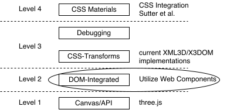
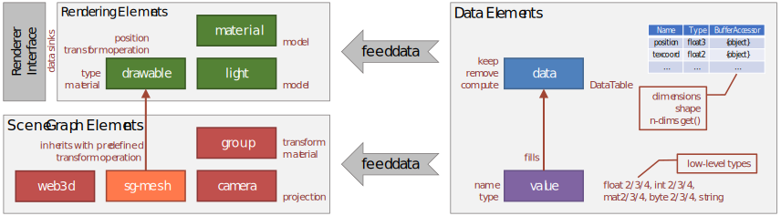
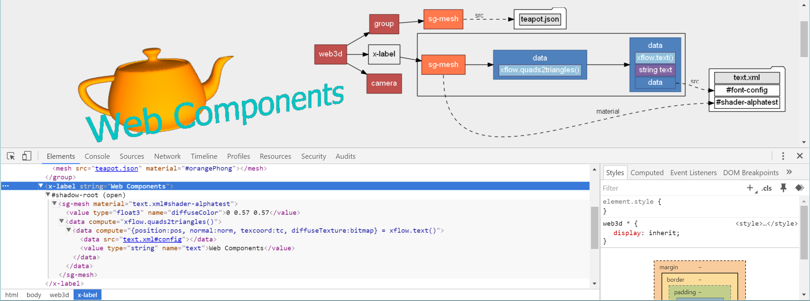
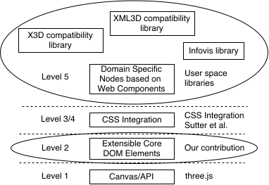

The Basic Building Blocks of Declarative 3D on the Web
Stefan Lemme, Jan Sutter,
Christian Schlinkmann, Philipp Slusallek
Integration Levels of Dec3D
- Integration levels according to Jankowski et al. [2013]
- Focus on the DOM integration taking into account recent Web technologies (i.e. Web Components)
Two Philosophies and their
Momentum for Adoption
### X3DOM
* X3D backward compatibility
* Highly specialized nodes
* Easier for beginners to start from scratch
* Harder to extend with application-specific functionality
### XML3D
* Minimal number of 3D-specific DOM elements
* Providing only a generic set of elements
* Application-related functionality left to JavaScript
* More boiler-plate to start with
Our Approach
- Minimum set of necessary new HTML elements
- These core elements offer the required functionality to embed 3D graphics
- Used as building blocks for user-defined elements by leveraging the power of Web Components
- Cover domain-specific functionality
- Provide additional convenience through an easy-to-use interface
- Existing nodes in X3DOM and XML3D can be implemented using our unifying approach
Core Elements of Declarative 3D
Rendering Elements
- Act as data sink to the renderer
- Feed data into respective stages of the rendering process
- Drawable represents geometry in the scene and supports common low-level rendering primitives
- Material defines geometry's surface appearance by configuring the properties of a material model
- Light represents a light source in the scene using built-in light models (e.g. distant, point, spot)
Data Elements
- Heavily builds upon the concept of generic dataflow processing [Klein et al. 2012]
- Data container exposing a DataTable with entries
- Entries consisting of an unique name, type of available data, and a BufferAccessor
- BufferAccessor acts as an interface to the actual data represented as an n-dimensional array of the defined type
Scene Graph Elements
- Rendering elements of the scene (i.e. Drawable, Light) can be organized by being placed into a Group
- Tree of Groups represents the transformation hierarchy of the scene within a root element
- Camera represents a view point and camera parameters
All Core Elements
Building upon Core Elements of Dec3D
Example: Custom Element x-label
Example: Animated Character "Ciccio"
Representation of Pre-Existing Elements
X3DOM Nodes
- Current X3DOM specification contains about 187 individual leaf nodes (i.e. HTML elements)
- Some elements are outside the scope for 3D graphics
- Script gathers the list of required components
- Every element must be prefixed with "x3d-"
- We addressed most common scene content such as materials, transforms and various generated shapes
- Foundation for a compatibility layer to display existing X3DOM scenes
- Example "Hello X3DOM"
XML3D Elements
- XML3D specification has traditionally contained a relatively small number of elements
- Prefix every element with "xml3d-"
- XML3D currently contains many (10+) elements which act as input to Xflow’s data processing
- For convenience XML3D also offers the xml3d-transform element, which composes a matrix from attributes
Conclusion
New integration model
- Fifth level of integration that resides at the top of the stack and consists of re-usable and sharable elements
- Keep the basic building blocks of Dec3D separated from convenience and domain-specific functionality
New integration model
- Allow Web developers to take advantage of selected components that exactly fit their needs
- Engage users and communities with Dec3D, that can build domain-specific elements as well as share them
"Hereby, we envision community-maintained repositories of reuseable components for a wide range of Dec3D usecases."
- Achieving the primary goal of the Dec3D community to increase the adoption of Dec3D on the Web